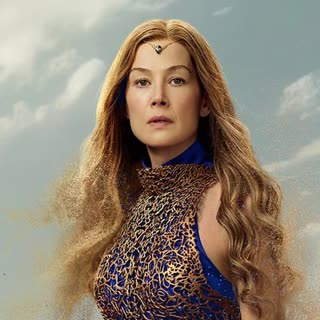
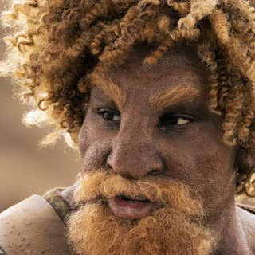

«Око мира» Роберта Джордана в BookSpeaks. Голос каждого персонажа создан по короткому текстовому описанию — без актёров и записей. Сравните, каким голос задумывался и как он звучит.
Ранд аль'Тор
Каким должен быть голос
Мужчина, 19 лет, высокий широкоплечий деревенский парень из глуши. Говорит просто и искренне, немного упрямо, без лоска и манерности. Чистый тёплый баритон молодого человека, средне-низкая высота.
Как он звучит
Если бы вам сказали о человеке в лесу... человеке, который приводит людей в ужас одним лишь взглядом... могло бы это вас остановить? Человек, лошадь которого ступает совсем беззвучно? А ветер не колеблет его плаща? Могли бы вы узнать, что надвигалось? Могли бы вы и Морейн Седай предотвратить случившееся, знай вы об этом человеке?

Морейн
Каким должен быть голос
Женщина около 40 лет, но голос без возраста; маленькая хрупкая аристократка. Говорит спокойно и точно, с негромкой властностью; холодная, сдержанная, чуть загадочная, никогда не повышает голос. Чистое мелодичное меццо-сопрано, благородный, царственный тон.
Как он звучит
Около двух столетий Троллоковы Войны опустошали мир, и, где бы ни кипела битва, стяг с Красным Орлом, знамя Манетерен, реял в самой гуще сражения. Воины Манетерен были занозой в ступне Темного и куманикой в его руках. Пойте о Манетерен, что никогда не склонялась перед Тенью. Пойте о Манетерен, меч которой нельзя было сломать.
Лан
Каким должен быть голос
Мужчина около 45 лет, закалённый ветеран-воин и телохранитель. Говорит скупо, короткими ровными фразами, холодно и сдержанно, привык отдавать приказы. Низкий жёсткий, чуть хрипловатый бас-баритон, каменный и ровный.
Как он звучит
Хочется поболтать об этом, да? Троллоки всегда бывают в Пограничных Землях, кузнец. Просто хорошенько вбейте себе в голову, что мы хотим привлекать к себе столько же внимания, сколько мышь в поле. Запомните это. Морейн желает доставить вас всех в Тар Валон живыми, и, если это можно сделать, я сделаю, но если вы хоть чем-то причините ей вред...

Лойал
Каким должен быть голос
Мужчина, добродушный великан ростом около трёх метров с огромной грудной клеткой; не человек, но говорит как вежливый книжный учёный. Неторопливый, учтивый и серьёзный, легко загорается разговором о книгах и истории. Очень глубокий раскатистый рокочущий бас, как далёкий гром, но говорит негромко.
Как он звучит
Еще десять лет, и я смогу обращаться к Пню. Думаю, Старейшины должны были бы позволить мне высказаться, когда решали, можно ли мне уходить или нет. Но они всегда беспокоятся о любом, любого возраста, собирающемся во Внешний Мир. Вы, люди, так торопливы и опрометчивы, так сумасбродны.